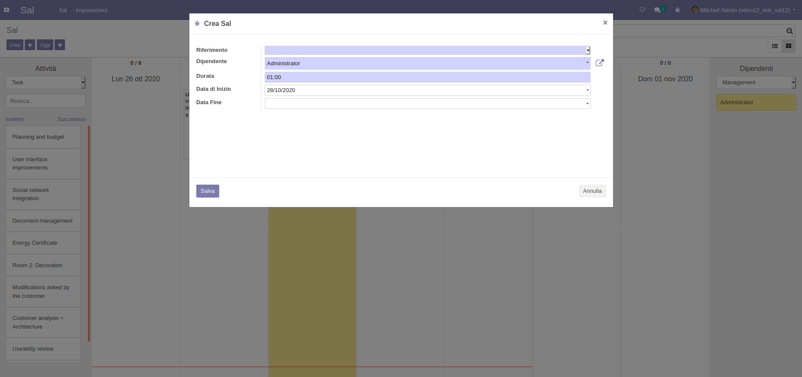
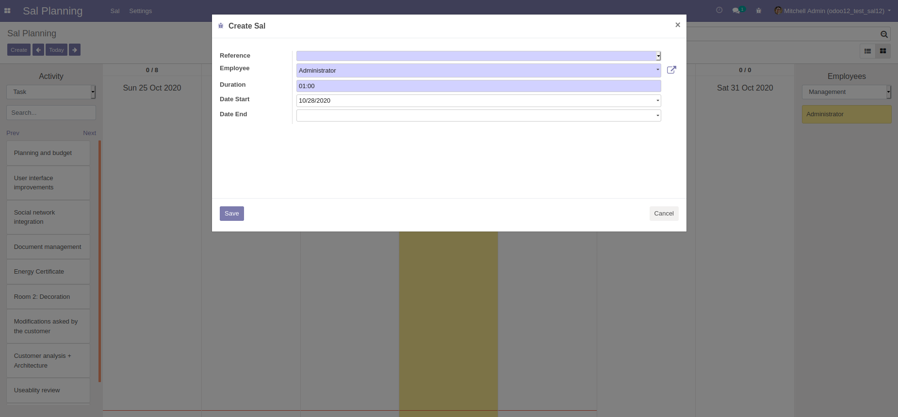
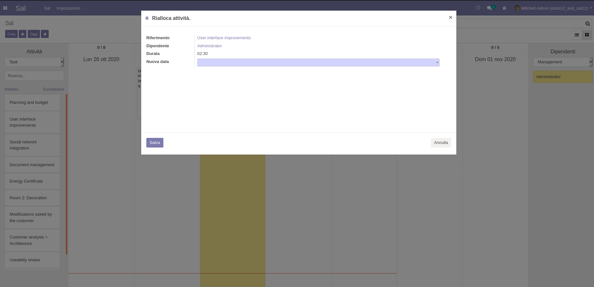
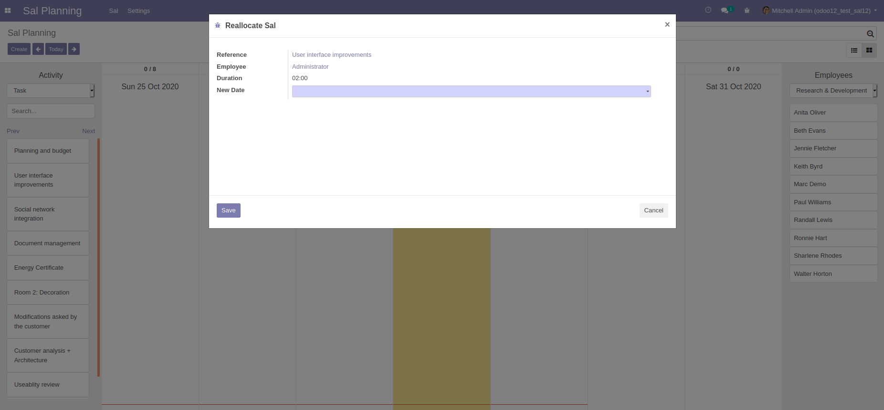
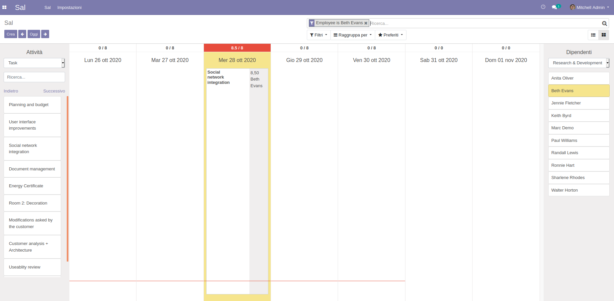
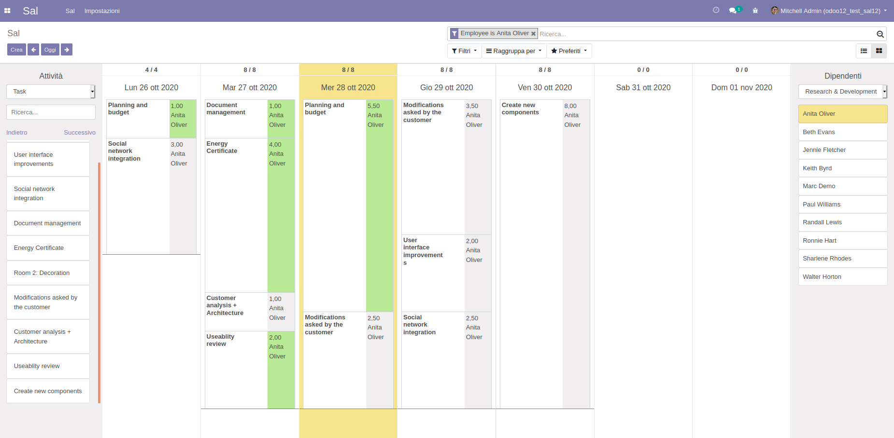

Netfarm Sal Planning è stato ideato e progettato per gestire la settimana lavorativa
del proprio personale su progetti, task ma non solo!
Tutti i modelli di Odoo sono utilizzabili nel SAL.
È una grande soluzione per pianificare l'orario lavorativo del proprio personale.
Il SAL sarà aggiornato in tempo reale e ogni dipendente potrà consultarlo in qualsiasi momento sul gestionale Odoo.
Facile da usare per tutti.
Netfarm Sal Planning is conceived and designed to manage your staff projects, tasks, and much more during the working week.
All Odoo models are usable in the SAL.
It is a great solution for planning the working hours of your staff.
The SAL will be updated in real-time and each employee can always consult it on the Odoo management software.
Easy to use for everyone.






Se hai bisogno di assistenza o per funzionalità aggiuntive, contattaci!
If you need assistance or want some additional features, contact us!